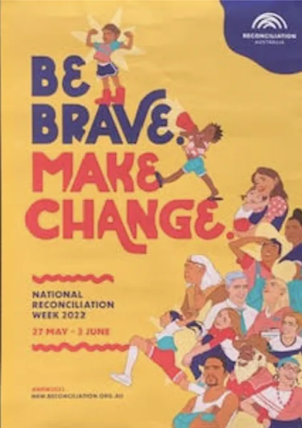

National Reconciliation Week May 27-June 3, 2022.
“Be Brave and Make a Change.”
Do you know what reconciliation means? We all have difficult times when people upset us, hurt us or don’t understand us and make us feel bad. This has happened to Indigenous people from a long, long time ago and so many, many people have been hurt just because of who they are.
Reconciliation is about trying to stop this, solve problems where words and actions are continually hurting people, so everyone is treated with respect for who they are.
Reconciliation is about understanding and getting to know about Indigenous People, sometimes called First Nations People. It is important for everybody that there is unity and respect between Aboriginal and Torres Strait Islanders and non-Indigenous Australians. It is about respect for Aboriginal and Torres Strait Islander heritage and valuing justice and equity for all Australians.
How we treat one another and the kind of relationships and communities we want to build for the future.
If someone hurts you and nothing is done to stop that hurting, what can you do? If nothing is done you will keep getting hurt. Even though National Reconciliation is for one week in a year, you can take actions all year round to help Reconciliation.
How can you be brave and make change so reconciliation with Indigenous People is real?
30 sec. Video on http://reconciliation.org.au
Please go to the Activities page and share your ideas here.
Resources:
Narragunnawali (pronounced narra-gunna-wally) is a word from the language of the Ngunnawal people, Traditional Owners of the land on which Reconciliation Australia’s Canberra office is located. The word means alive, wellbeing, coming together and peace. From professional learning and curriculum resources, to a national awards program, the Narragunnawali platform is free and available for everyone to advance reconciliation in education.